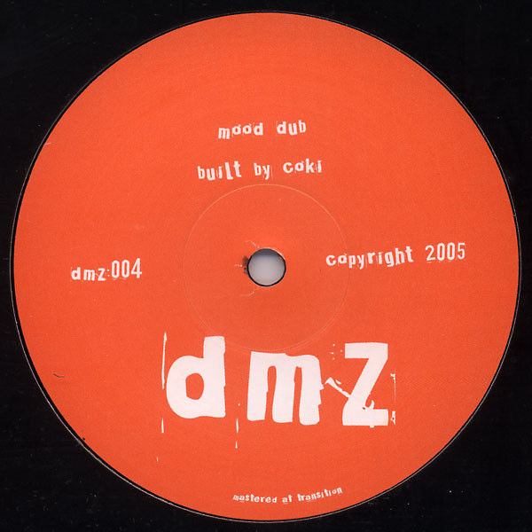
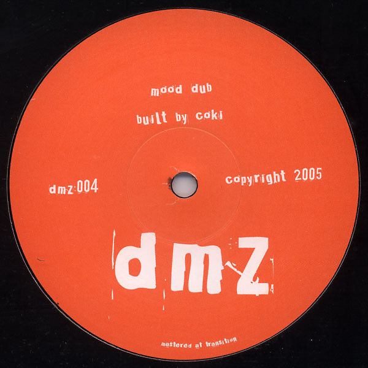

DMZ 004
 

The first DMZ release to feature only one artist, DMZ004 finds Coki in perhaps one of his most underrated releases. Though he would become famous for absolutely ferocious basslines, Coki's music has always had another influence, a
Dub/Reggae swagger that serves as a counterpoint to his wilder impulses.
On "Officer," these tendencies are on full display, complete with horns, strings, an off-beat guitar and a gently wobbling bassline. "Mood Dub" is likewise on the
dubbier side from Coki, but the palette is much sparser and more paranoid, leaving space for one of the catchier basslines to come out of the DMZ catalogue.
A: Coki - Officer
AA: Coki - Mood Dub